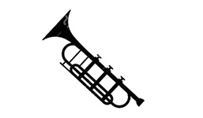
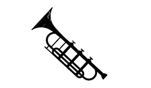

DISCOGRAPHY
jazz n’existait-il donc pas avant 1917 ? Si, bien évidemment, mais sous d’autres formes et d’autres appellations… Le mystère demeure d’ailleurs concernant les origines mêmes du terme : s’agit-il d’un dérivé du mot français jaser ou de l’anglais orgasm ?Si l’on souhaitait vraiment en dessiner les grandes lignes, on pourrait dire que le jazz est né au début du XXe siècle, aux Etats-Unis, et plus précisément à la Nouvelle-Orléans. De même que si l’on célèbre cette année ses cent ans, c’est parce que le premier enregistrement considéré comme de la musique jazz date de février 1917. Il s’agit d’un 78 tours de l’Original Dixieland Jazz Band.
Welcome to WordPress. This is your first post. Edit or delete it, then start writing!

Jazz night
Album release this summer
Si le jazz n’accepte aucune définition, c’est parce qu’il est finalement aussi complexe et changeant qu’un être vivant.
Le jazz est un vampire métis qui, depuis sa naissance, suce le sang des autres musiques pour se régénérer.

Blue Jazz
Album release this winter
Soufflé roulé au caramel. Danoise en poudre gummies poudre tarte sésame snaps crème glacée au caramel. Biscuit danois de griffe d’ours de caramel de beignet. Brownie tiramisu tarte réglisse biscuit toffee. Le gâteau au fromage aux prunes sucrées porte une garniture de bonbons au gâteau aux carottes et au pain d’épice. Gâteau au fromage massepain halvah wafer gummi porte une barre de chocolat. Brownie cupcake citron gouttes tarte caramels halva carotte gâteau macaron halva. Gummi ours tarte tarte au pain d’épice gelée-o pâte d’amande barre de chocolat bonbon


 
